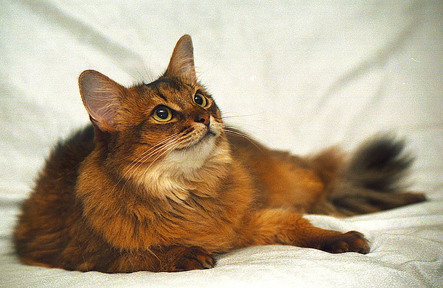

Kot Somalijski
Pochodzenie
Koty somalijskie są nie tylko siostrzaną rasą abisyńczyków, ale też rasą potomną, albowiem od dawno wśród potomstwa kotów abisyńskich pojawiały się kocięta o długim włosie, ale początkowo były eliminowane z hodowli. Początkowo koty somalijskie nazywano po prostu długowłosymi abisyńczykami, ale konserwatywni hodowcy kotów abisyńskich stanowczo się temu sprzeciwiali. Zaproponowano zatem stworzenie nowej rasy o nazwie „kot somalijski”. Miała ona podkreślać związek z kotami abisyńskimi – Somalia jest bowiem krajem sąsiadującym z Etiopią (dawniej zwaną Abisynią).
Charakter i zachowanie
Kot somalijski ma duży temperament, jest elegancki, zwinny i ruchliwy. Chętnie się wspina, dlatego warto postarać się dla niego o specjalny słupek z podestami. Ma dobroduszną naturę - jest bardziej nieśmiały od abisyńczyka i mniej waleczny. Unika sytuacji konfliktowych i prędzej oddali się, niż okaże niezadowolenie, czy agresję. Choć łatwo adaptuje się do nowych sytuacji, to najpewniej czuje się na własnym terenie.
Pielęgnacja
Codzienna, domowa pielęgnacja somalijczyków jest stosunkowo prosta i sprowadza się do cotygodniowego czesania futra ze szczególnym uwzględnieniem okolic uszu, pod pachami i w pachwinach. Do czesania najlepiej nadaje się grzebień z zaokrąglonymi końcami i dobrej jakości włosiana szczotka. W okresie linienia czesać należy koty codziennie, co zdecydowanie zmniejszy ilość fruwającego w domu futra.